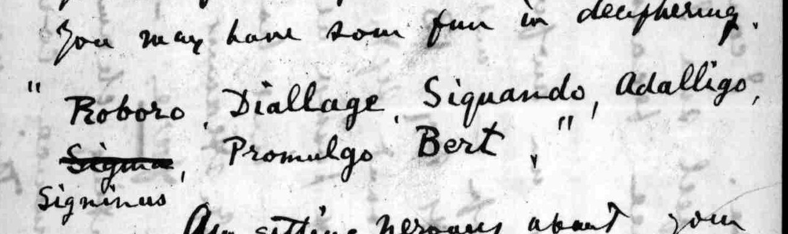

At a glanceKnown key applied · complete
- The letter
- Alexander Graham Bell to his wife Mabel, 27 August 1900, on board the SS Ulunda on the Thames, bound for Halifax by way of St John’s, Newfoundland. He says he has sent her a “Unicode” message “which you may have some fun in deciphering” and copies its words into the letter.
- Where
- Library of Congress, Manuscript Division, Alexander Graham Bell Family Papers, magbell.04100117, image 1 of the letter. Catalogue entry 763.
- The cipher
- A commercial phrase code: “Unicode”, The Universal Telegraphic Phrase-Book, gives a Latin word for each of thousands of stock phrases. The key is the printed book.
- How it was read
- Each word was looked up in the 1896 edition on archive.org and checked on the page image; the 1889 edition was read in its text layer only. The sentence it makes fits the letter.
- What it says
- “Telegram received. Glad to hear from you. Wrote to you by this morning’s post. Am quite well, and writing by post. Weather very fine, sea quite smooth.” One word, Promulgo, is a betting phrase that the letter does not explain.
- Still open
- Why Bell used Promulgo (“Put me £1,000 to win on —”); what Bert stands for. No portraits yet (Wikimedia was not reachable).
01 The letter and the message

The letter is dated “SS. Ulunda — on the Thames, August 27 1900” and addressed to Mrs A. G. Bell at 9 rue Boccador, Paris. It opens “Received your telegram on reaching steamer and have sent you the following ‘Unicode’ message which you may have some fun in deciphering”, and gives the words: Roboro, Diallage, Siquando, Adalligo, Signinus, Promulgo, Bert. The rest of the letter is about a night bell for Mabel’s room, the slowness of the steamer (“looks like a tramp — and slow”), his plan to call at St John’s, and keeping the voyage secret.
The Library of Congress transcription lists five words and a signature, “Signinas”. The image shows something else: Signinus is a correction in the middle of the message. Bell wrote Sigma after Adalligo, struck it out, and wrote Signinus below the line. Bert is plain text.
02 The reading
| word | phrase in the book | page, 1896 ed. |
|---|---|---|
| Roboro | Telegram received | 88 |
| Diallage | Glad to hear from you | 35 |
| Siquando | Wrote to you by this morning’s post | 96 |
| Adalligo | Am quite well, and writing by post | 5 |
| Signinus | Weather very fine, sea quite smooth (Sigma, struck out: Weather very fine) | 95 |
| Promulgo | Put me £1,000 to win on — | 78 |
| Bert | not a code word | — |
Telegram received. Glad to hear from you. Wrote to you by this morning’s post. Am quite well, and writing by post. Weather very fine, sea quite smooth. [Promulgo: Put me £1,000 to win on —] Bert.
Bell’s change from Sigma to Signinus shows he was picking phrases: “Weather very fine” sits two lines above “Weather very fine, sea quite smooth” on page 95, and he chose the longer one. The four messages about the post, his health and the weather are the kind of thing a husband on a ship would send. Promulgo is the one that does not fit. Page 78 of the book has it beside “Put me £1,000 to win on —”, one of the racing-bet phrases, and the letter gives no reason for it. It may be a joke for Mabel to puzzle over, but that is a guess, so it is read as printed and marked as odd.
03 How the words were found
The catalogue entry named the book: “Unicode” Universal Telegraphic Phrase-Book, in print from 1886. Two scans are on archive.org: an 1896 edition (UnicodeUniversalTelegraphicPhraseBook) and an 1889 one (unicodeuniversa00unkngoog). The text layer prints the phrases and the code words in separate columns, so each word was first paired to its phrase by counting entries on its page (on the Promulgo page 36 phrases and 36 words match). Then the page images were opened and each word read beside its phrase: pages 5, 35, 78, 88, 95 and 96 of the 1896 edition. All six pairings were right. The 1889 scan was checked in its text layer only, not on its page images: it has all six words (Roboro and Signinus garbled by the OCR), and prints Roboro and Diallage on the same line as their phrases. The 1898 edition, named in the catalogue, was not found online, so Promulgo is confirmed in the 1896 edition only.
No part of the key was recovered from the ciphertext: the book is the key, so this is a known-key reading, and the work is the transcription and the lookup. No earlier decipherment was found (Library of Congress record and transcription; project notes, checked 28 and 29 October 2026).
04 What remains uncertain
- Promulgo, “Put me £1,000 to win on —”: the book’s value is certain (page 78); why Bell sent it is not known. The 1898 edition was not checked for a different entry.
- Bert: left as plain text. It may be a name or a sign-off; it is not checked against other letters.
- The writer’s spellings were read on the master image at display size: Siquando, Adalligo, Promulgo agree with the book letter for letter.
Full texts
The transcription and the decryption of every document on this page, so that the reading can be used and checked. Short files are shown here; all are in the repository.
telegram (Library of Congress, Alexander Graham Bell Family Papers, magbell.04100117, image 1, 27 Aug 1900)
Bell, on the steamer Ulunda on the Thames, telegraphs his wife in a commercial code that she is to puzzle out; it says telegram received, glad to hear, wrote this morning, quite well, weather fine and sea smooth, plus one betting phrase that the letter does not explain.
Transcription
LoC magbell.04100117, image 1 (folio 1 recto), lines 13-14 of the text, quoted in the letter of 27 Aug 1900 (SS Ulunda, on the Thames): "Roboro, Diallage, Siquando, Adalligo, [Sigma struck out; Signinus written below the line], Promulgo, Bert," Token order as sent: Roboro Diallage Siquando Adalligo Signinus Promulgo Bert (Bell first wrote Sigma = "Weather very fine", struck it out and put Signinus = "Weather very fine, sea quite smooth".) The By the People transcription gives "Siquando ... Promulgo Bert" and a "Signinas" signature; the image shows Signinus is an insertion in the middle of the message, not a signature.
Decryption
# Bell to Mabel Hubbard Bell, 27 Aug 1900: Unicode telegram quoted in the letter
Cipher: Roboro, Diallage, Siquando, Adalligo, Signinus, Promulgo, Bert
(page images: LoC magbell.04100117 image 1; code book: "Unicode" Universal Telegraphic Phrase-Book, 1896 ed., archive.org
UnicodeUniversalTelegraphicPhraseBook, checked on the page images, pp. 5, 35, 78, 88, 95, 96)
| Word | Printed phrase | Page |
|---|---|---|
| Roboro | Telegram received | 88 |
| Diallage | Glad to hear from you | 35 |
| Siquando | Wrote to you by this morning's post | 96 |
| Adalligo | Am quite well, and writing by post | 5 |
| Signinus | Weather very fine, sea quite smooth | 95 |
| Promulgo | Put me £1,000 to win on — | 78 |
| Bert | not a code word; a clear name or sign-off | |
Plaintext: "Telegram received. Glad to hear from you. Wrote to you by this morning's post. Am quite well, and writing by
post. Weather very fine, sea quite smooth. [Promulgo: 'Put me £1,000 to win on —'] Bert."
All six code words are in the book and match the phrases above (the earlier OCR alignment was right on every word).
Bell changed his mind about one word: Sigma ("Weather very fine") is struck out and Signinus ("... sea quite smooth")
written under it. Promulgo is printed as a betting-office phrase; nothing in the letter explains it (the letter is
about the slow steamer, a bell for Mabel's room and keeping his trip secret), so it is read as printed and flagged
as odd, possibly a joke for Mabel to puzzle over. "Bert" is left as an unread clear word.
Context: Bell on SS Ulunda on the Thames, answering Mabel's telegram received on reaching the steamer; the letter says
"Unicode message which you may have some fun in deciphering".Reading
# Bell to Mabel Hubbard Bell, 27 Aug 1900: Unicode telegram quoted in the letter
Cipher: Roboro, Diallage, Siquando, Adalligo, Signinus, Promulgo, Bert
(page images: LoC magbell.04100117 image 1; code book: "Unicode" Universal Telegraphic Phrase-Book, 1896 ed., archive.org
UnicodeUniversalTelegraphicPhraseBook, checked on the page images, pp. 5, 35, 78, 88, 95, 96)
| Word | Printed phrase | Page |
|---|---|---|
| Roboro | Telegram received | 88 |
| Diallage | Glad to hear from you | 35 |
| Siquando | Wrote to you by this morning's post | 96 |
| Adalligo | Am quite well, and writing by post | 5 |
| Signinus | Weather very fine, sea quite smooth | 95 |
| Promulgo | Put me £1,000 to win on — | 78 |
| Bert | not a code word; a clear name or sign-off | |
Plaintext: "Telegram received. Glad to hear from you. Wrote to you by this morning's post. Am quite well, and writing by
post. Weather very fine, sea quite smooth. [Promulgo: 'Put me £1,000 to win on —'] Bert."
All six code words are in the book and match the phrases above (the earlier OCR alignment was right on every word).
Bell changed his mind about one word: Sigma ("Weather very fine") is struck out and Signinus ("... sea quite smooth")
written under it. Promulgo is printed as a betting-office phrase; nothing in the letter explains it (the letter is
about the slow steamer, a bell for Mabel's room and keeping his trip secret), so it is read as printed and flagged
as odd, possibly a joke for Mabel to puzzle over. "Bert" is left as an unread clear word.
Context: Bell on SS Ulunda on the Thames, answering Mabel's telegram received on reaching the steamer; the letter says
"Unicode message which you may have some fun in deciphering".Key: key.tsv
05 Sources
- Alexander Graham Bell to Mabel Hubbard Bell, 27 August 1900, Library of Congress, Alexander Graham Bell Family Papers, magbell.04100117 (folder: Mabel Hubbard Bell, Family Correspondence, Alexander Graham Bell, January–October 1900).
- “Unicode”: The Universal Telegraphic Phrase-Book, 1896 edition, Internet Archive, and the 1889 edition, Internet Archive.
Notes, key and reading: targets/bell1900.